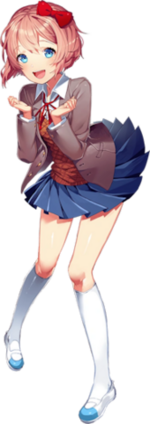
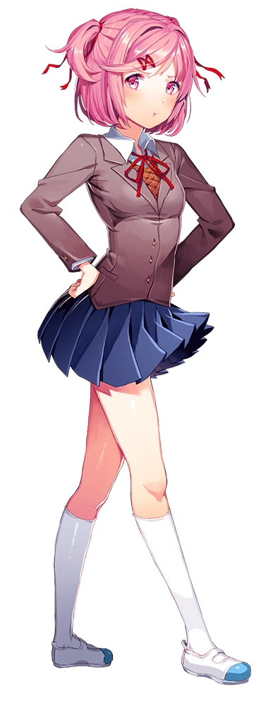
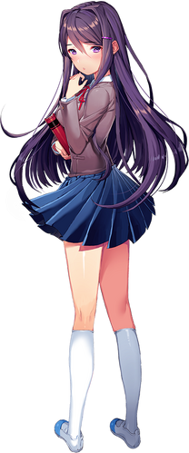

Conheça as Personagens
O jogo apresenta quatro personagens principais, cada uma com sua própria personalidade, estilo e história. Abaixo estão as descrições de cada uma delas:
Sayori

Sayori é a amiga de infância do protagonista e uma das primeiras personagens que o jogador encontra. Ela é alegre, extrovertida e sempre tenta manter os outros felizes, embora esconda uma profunda tristeza interior. Sayori é a presidente do clube de literatura no começo do jogo, mas sua verdadeira luta emocional se torna um tema central da história.
Natsuki

Natsuki é uma das membros mais impetuosas do clube, com um estilo agressivo, mas uma personalidade bastante doce por baixo disso. Ela tem uma paixão por mangás, especialmente os de gênero shoujo, e frequentemente tenta manter uma imagem forte e independente, embora sinta insegurança devido ao seu ambiente familiar difícil.
Yuri

Yuri é uma garota introspectiva e com um grande amor por livros e literatura profunda. Ela tem uma personalidade mais tímida e reservada, e é muito apaixonada por poesia sombria e filosófica. Ao longo do jogo, a relação dela com o protagonista se aprofunda, revelando suas complexidades emocionais e sua luta interna.
Monika

Monika é a presidente do clube de literatura e uma personagem carismática, inteligente e muito motivada. Ela exibe uma personalidade confiante e sociável, mas à medida que a história se desenrola, ela revela um lado mais perturbador, envolvendo-se em temas como controle e a natureza do próprio jogo. Monika desempenha um papel único e crucial no enredo de *Doki Doki Literature Club*.